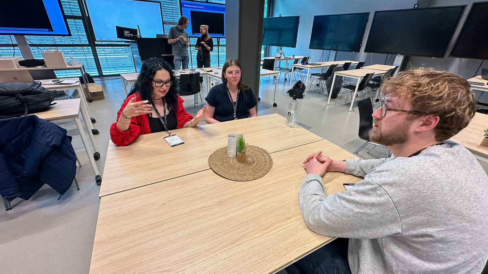
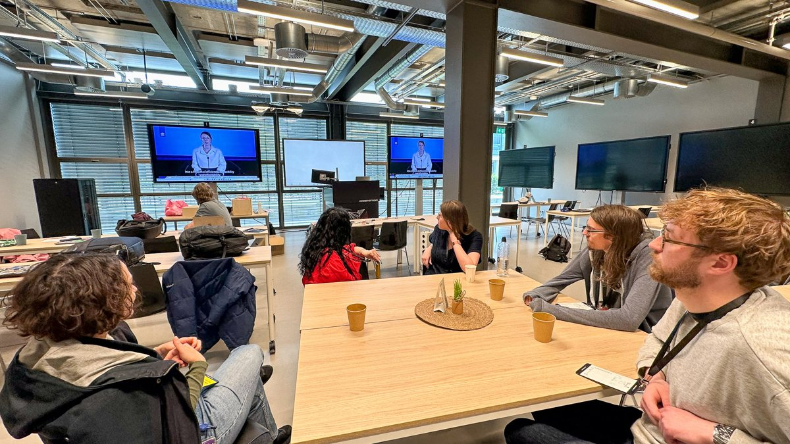

Assignment on ethical analysis tools and long-term impacts.
Due: 25 May
A note upfront: due to personal circumstances I could not be at the EduLARP session itself. What follows is based on what my group members described to me afterwards, the group worksheet, photos, and the session materials, so the observations here are second hand. The impact assessment and the reflection on our own case are my own work.
Session 5 was about ethics, sustainability and the long term. The main exercise was the EduLARP, a roleplaying tool from the Saxion Lectorate Ethics and Technology, hosted by Verena Schulze Greiving and Afra Willems. The idea behind it is that technical students experience ethical tensions from inside a role instead of analysing them from a distance. The session also offered the Product Impact Tool as an alternative, which is the one I could do solo and used below.


Since I missed the LARP, I did the exercise I could do solo: the Product Impact Tool [1], which the session offered as an alternative. The tool maps how a product influences people through four quadrants (to-the-hand, before-the-eye, behind-the-back, above-the-head), and the session slides ask you to pick the three aspects most relevant to your concept. For our case these are:
To-the-hand, subliminal affect: the robot steers the dog with treats and play, conditioning below the dog's awareness. The dog cannot consent or opt out, so the only protection is built in behaviour: the dog's disengagement must always win from the robot's program.
Before-the-eye, persuasion: aimed at the owner, not the dog. The companion app reassures the owner about how the dog is doing. Our dark scenario from the scenario design session is exactly this failing: the robot reports a frozen, distressed dog as calm. False reassurance is worse than no information.
Behind-the-back, side effects: if the robot "handles" the dog, leaving the dog alone longer becomes normal, so the tool could end up enabling the problem it is meant to treat. And a robot with a camera in the living room is a household privacy question, not just a dog question.
The assignment asks how a LARP could be designed for an aspect of our own case. I think the honest answer is that our group accidentally built half of one. PAT, our card-based scenario toolkit from the in-depth assignment, already has people play the dog and the robot and act out an encounter. What it does not have is the ethics layer of the EduLARP: roles for the people around the interaction and a forced look at the future.
An ethics LARP for our case would add exactly that: a player for the owner (who only sees what the app tells them) and one for a neighbour (who only hears the barking), plus an ethics complication deck with cards like "the owner is watching remotely" or "the robot records everything it sees". The expected insight is the same thing the Donkey worksheet shows for education: it forces you to say who wins and who loses when the robot works as designed. In our case the uncomfortable question is whether the dog is one of the winners, since the dog is the only stakeholder that never gets to read the app. Mancini's animal-centred ethics makes this concrete: an interaction should be worth it for the animal itself, not only technically successful [2].
I can only judge the EduLARP second hand, so I will keep that modest: the worksheet and Bianca's account suggest it does what it promises. The worksheet produced a concrete future with named winners and losers in one session, and for Bianca the doubt about the app only landed once she had lived with it in character for a few decades of scenario time. What I cannot judge is the part that is supposedly its strength, how it feels to play a role, which is also the part I missed.
The Product Impact Tool I can judge, because I used it. It is fast, and the quadrants pushed me to two issues I had not written down anywhere yet: the normalisation of leaving dogs alone longer, and the camera in the living room. Its weakness for our case is that the model is built around human users. The dog does not really fit any quadrant, you have to bend the categories to cover an animal. An animal-centred version of this tool would be a genuinely useful thing to make.
[1] Dorrestijn, S. (2017). The Product Impact Tool: the case of the Dutch public transport chip card. In K. Niedderer, S. Clune, & G. Ludden (Eds.), Design for behaviour change: Theories and practices of designing for change (pp. 26-39). Routledge.
[2] Mancini, C. (2017). Towards an animal-centred ethics for Animal-Computer Interaction. International Journal of Human-Computer Studies, 98, 221-233.